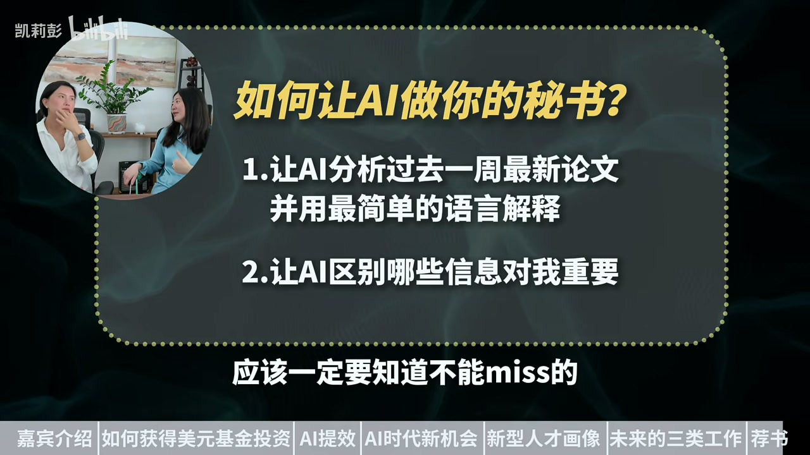

内容要点
硅谷连续创业者小鹰（斯坦福辍学、A16Z/OpenAI 等美元基金背景）对谈：工作不会消失，给「老登公司」打工的机会变少；人要学会管 AI（少骚扰、错题本、AI 盯 AI）；从螺丝钉变通才、能定义问题。近未来三类工作：Founder、销售（人格魅力）、过渡期苦工/精细体力。教育侧强调抗压、定义欲望、别卷可被定义的路线（如纯奥数攀比）。
知识结构
风口+先有客户收入+圈子；英语叙事加分；小团队全能+AI。
人成瓶颈；工作更多、老登岗更少；会操纵 Agent 的人稀缺。
未成功创业者常高于大厂螺丝钉；换圈子；孩子要皮糙肉厚、会定义问题。
Founder / 销售 / 过渡苦工与精细体力；传记+测新产品+播客。
别守破船当中层写文档；尽快进入「定义问题 + 管 AI」的新工作方式。近未来最硬的是 Founder 与销售，螺丝钉最先被裁。
00:00-03:30背景与美元基金：风口、收入、圈子
开场介绍小鹰：连续创业、融约两千万美金、现做「让每个人用 AI 打造一人公司」。谈亚裔如何拿头部美元基金：近年投中国人更多；英语表达有帮助；更关键是赶上风口（疫情虚拟活动类比今天 AI）、先有客户与收入再融资、以及硅谷融资圈子。
团队极瘦：五人以内。旧思维「十人干不过一人」的对手——对方一人兼产品设计品类还会用 AI；会议与不会用 AI 的人拖慢组织。工作碎片化：给 AI 派活、被权限与质量反复打断。
03:30-07:00管 AI：人是瓶颈；打工岗在漏
管 AI 的难点：让它干得久且靠谱——权限一次给对、方向及时纠偏、派另一个 AI「骂」它质检、做错题本长记性。人要保重体力：AI 不休息，人成瓶颈；不是让 AI 适应有肉体极限的你，而是你适应 AI 的工作方式。
金句：工作肯定会越来越多，只是给老登公司打工的机会越来越少。围绕 Agent 的新组织尚未成型，会操纵智能体的人各公司都缺；能自己写代码收尾的新型产品经理值钱，传统开会写文档型会变少。破船裁员逻辑：不需要那么多人 + 降本增效叙事。
07:00-12:35通才、三种工作与怎么迈第一步
硅谷常觉得「没那么成功的创业者」高于大厂打工人——通才、对结果负责、主动。与其纠结创业/打工标签，不如从螺丝钉变成 AI 时代需要的人。第一步：换掉只聊裁员的圈子，接触 AI 淘金场的朋友与年轻人，放下旧架子。
对孩子：皮糙肉厚、心理强、知道自己喜欢什么；社会可定义的路线易被 AI 取代，要练定义问题与欲望。明确没价值的别卷（纯螺丝钉、用奥数证明牛）。三种工作：Founder（社会主人）、销售（人格魅力、更挣钱）、过渡期苦工/精细体力（AI 手笨时）。资料：名人传记、逼 AI 用「傻子方式」解释、狂测新产品、听 20VC / More or Less 等播客。

完整转录（539段）
以下文本由 Whisper medium 模型自动转录，可能存在少量识别误差，已尽可能修正。
一个山东女孩从斯坦福辍学创业
被头部美元基金A16Z投资
成功卖掉公司后再次投身AI创业
又获得了OpenAI的投资
一共揉了2000万美金
人们常说AI会取代人
她说工作肯定会越来越多了
只是给老邓公司打工的机会越来越少
人们说创业久死一生
她又说一个没成功的创业者
高于一个给大公司打工的
她现在做的事是让每个人
都能用AI打造艺人公司
她就是小鹰
大家好
我今天在硅谷的一个朋友的家里面
小鹰
Hello 大家好
小鹰是一个连续创业者
今天我会来跟她聊聊
AI时代的前的一些动态 认知
也聊聊看她对于AI时代教育的一些看法
希望能够给大家带来启发
你身上有一个特别亮眼的标签
就是你之前的公司是被OpenAI投资
包括A16Z Funders Fund
就是基本上头部的美元基金
那现在假设我们的观众
他也想去走创投的这个路线
你作为一个亚裔
你是怎么能够拿到头部美元基金
我觉得首先现在其实他们投挺多的中国人
以前投的少
你拿的时候他其实投的还蛮少
我拿的时候投的都非常少
是因为你英语是Native水平吗
首先可能就以我老公是白人
要不然吵架吵不过他
他这个还是要练一练的
要是没有家庭地位那肯定不行
确实我可能嘴比较能说
我觉得是有帮助的
当然其次就是我也是三不然毕业
曾经Facebook也有些光环
现在可能光环少一点
三不然毕业辍学也是
那到今天依然是非常有力
但是最重要的还是我们赶上了风口
我们在疫情的时候做虚拟活动
那就是今天做AI创业的风口
那当然其实有很多风口
在对的时间做对的事情
我们可能当时产品还不是很行
但我们有收入
我们先有客户的
有收入了之后我再去融资
那时候肯定底气比较足
你爱投不投不投我也争钱
就成了我带你挣钱了
不是你带我挣钱
当然就更愿意投
当你啥也没有的时候
你就只能讲故事
第二就是说
在我们硅谷的融资是个圈子
你就每天去参加各种活动
认识一些人
让别人介绍
AI实在其实相对来讲比较公平
因为它就比较容易出产品
然后大家比较容易测试
而且现在很多企业愿意去尝试
因为它也担心它自己公司是老灯
所以说它是有一些焦虑的
你别让它的焦虑
你也可以去更快的获客
你们现在团队是多少个人
我们就五个人以内
我们以前是几十个人
后来我就开始病
就说这六个人的活活让一个人干
把那个人都给他钱
因为之前我们有十几个人
有个竞争对手就一个人
我们就干不过那竞争对手
就干的可快了
因为干了个辛苦
我们搞半天搞不出来的
我还说我们员工
他说你们这些人怎么干不过
十个人干不过一个
当时我的思维是老灯思维
我还说人家
后来我就发现这个人既懂产品
又懂设计
还有品类
还会用AI
那我们一堆人
十个人里面
五个人用AI用不太会
还有五个人要开会
你怎么能跟人比
不是说人家员工不努力
是我啥比
但你现在每天的工作时间
大概从早到晚安排的
我现在也比较碎片化
比如说安排个活让AI干
我可能就可以跟你聊聊天
但是过会可能又一堆问题
就得来我弄
比如说睡觉之前
我希望能安排些活
要不然就觉得很浪费了这个时间
但是有的时候又不理解
我在说啥
我还得跟他解释半天
你知道会很烦
这个活可能是AI在干
我尽量让他干
但是我就发现
一开始比如说干一分钟
就开始找我
这个权限那个权限就很烦
那好我怎么办
他干了五分钟
就说我可能权限给他
然后他干完之后
他干的又很垃圾
我就得骂他
我能不能不要让我来骂他
AI的工作就是骂这个AI
这样我就不用听了
那么好他们骂完了之后
改完了之后
他们骂的人觉得ok了
再来恶心我
那这样的话可能
就从五分钟到十分钟
十分钟不来骚扰我
那我是不是就可以
多干几件事
如果是说五分钟弄一个事
我能开三个窗口
四个窗口
如果说一小时干一件事
可能我能开五个窗口
十个窗口
所以他这个是非常重要的
但我怎么能让他干
一小时不来恶心我
且干的东西是靠谱的
因为你如果一小时不盯着他
他干个完全不靠谱的事
那就完全浪费
这就是管AI的难点
就是根据你的需求
慢慢的架构就出来了
怎么让他干的对的方向
及时发现方向不对
就不要浪费更多时间
另外就是说他不要老犯错
有的时候他自己可能意识不到
就得派一个AI来骂他
这样会搞出这种两个AI对骂
还有就是他得长记性
就是我同一个问题跟他说五遍
那我就很烦了
他得有个错题本就记下来
这几个东西弄上去之后
现在逐渐发现
他干的时间越来越长
但是就是AI时代中
可能要保重体力
因为这个AI他老不休息
你很累
这个时候你睡也睡不好
人成了瓶颈
对 人就是瓶颈
现在成了我在适应AI的工作方式
不是说他在适应我
他是老板
因为你不能让AI来适应你的工作方式
你的工作方式是有肉体瓶颈的
但是AI的工作是没有肉体瓶颈的
工作机会越来越少
不管愿不愿意承认就是一个趋势
现在很多职场人可能想要去做些事情
我觉得这个不是趋势
工作肯定会越来越多了
只是给老邓公司打工的机会越来越少
围绕这种AI agent为核心的
这种AI agent为核心的新的组织架构下的员工
这个还没出现
会操纵AI智能体的人
每个公司都很缺
但是这个人现在很少
这种人现在是哪一个出一个
是这样的一个水分
但是产品经理现在也很值钱
很多AI的公司产品经理很难招的
因为他可能产品经理自己
就能把代码都给搞定都能写完
那这种人你要给他很多钱才对
这是很牛逼的
但是就是传统的那种开会的产品经理
老一代的时候都是说对题
什么写什么这个文档那个文档
这个确实会越来越少
因为AI也可以写文档
不太需要人写
新型的产品经理远远没开始
核心在于说你的技能不提升的情况下
一定是越来越少
老邓公司一个旧的生产方式
一艘破船
它当然是在漏的
漏了之后它的公司就不断的裁员
首先它确实不需要那么多人
这些人也没啥用
另一方面就是它股价又老跌
跌的就得裁员
裁的越多股价越涨
所以它是失误率很难增上去了
这个时候股价要涨
我就讲我降本增效
我就裁一波员
就有点像你船都要沉了
你在那呆着
那肯定不行
但是很多船没沉
很多船刚刚开始
你的意思是说
就是职场人
他其实不需要说
我要去培养商业思维
我需要去创业
他即使是继续去做一个打工人
他其实也有很多的机会
我觉得有很多的机会
只是说你要改变你的思路
当然现在很多公司就是招创业的
比如说YC/类似
成功创业者
他不用多成功
特别成功也不去
但是有点成功也行
或者没成功
现在在硅谷
很多时候觉得一个没成功的创业者
高于一个给大家公司打工的
因为他有这种通才的思维
有这种为结果负责的态度
跟这种主动性
所以这种人才大家比较想招
创业来讲
我觉得现在成本不是很高
大不了你就去YC/类似
或者这样的公司
找一个比较好的工作
但是你要培养的是这种通才的
这种能动性的这种能力
比起来最坏的情况
就是你在一个破船上
然后说你是个中层领导
每天也啥也不干
就是天天正着斗争
写一写文档
这个一定会被淘汰的
要裁人先裁你
与其说是成为创业者
或者是职场人转型
倒不如说是从罗斯丁变成通才
变成一个AI时代所需要的人
说白了就是现在被裁的人
他的所属的环境
可能是AI时代
不太需要的那种技术类型
或者是他的工作方式
但是这个人本身可能是聪明的
就跟你讲当年下岗再就业
在出了很多富豪
当年下岗之后
然后继续闯一闯
搞一搞什么的
开了很多工厂
现在很多成二代
他爸妈当时就下岗再就业那帮人
我觉得是到了这样的一个时代招口
现在有很多的机会
大家面前也看到很多造富的故事
也可能蠢蠢欲动
你会怎么建议大家
比如说怎么开启第一步
第一就是你最好周围有一些
这种AI时代的朋友
如果都是老登朋友的话
大家每天都聊的是什么裁员
他脑子可能就转不过来
你还是需要接触一些圈子
都follow你的频道对吧
去学一下
就是说现在AI都在干嘛
大家都在干什么
有什么样的机会
就是得先有一种很乐观的心态
我觉得是重要的
就是有点像现在这个桌子掀了
要重新洗牌了
就甭管你以前多牛逼
你现在这个时代又就是新时代了
那么肯定是尽快的进入新时代是最好的
你守着自己的一亩三分地
马上就要被洗牌了
那搞个毛钱
所以就是首先周围的人
最好都是新的淘金热力
淘金的朋友
首先你的认知也好
还是心态上也好
会跟大家积极
其实是有很多机会的
新技术革命发生了
然后我们又还没老
但是可能周围的人如果都是说
要被裁员了吗
傻逼了傻逼了
你可能就是很容易丧丧的
能量场先换一波
第二就是说
你可以多跟年轻人19岁20岁的
不是说他们多懂
而是说他们可能没有那么多包袱
以前我可能很牛逼
大家都很尊重我
现在这个架子好像得放下
尽快的适应
赶紧就加入新型的工作方式
确保也是最有用的
我觉得这是比较重要的
你家里还有个小孩
你希望你的小孩将来
他成为一个什么样的人
或者做什么事
我觉得我第一
我很难判断
我希望他首先皮糙肉厚一点
因为感觉将来失业会很经常失业
干一个工作就失业了
那个工作就失业了
不要有那么多的包袱
第二就是说
心理比较强大
心理比较强大
因为我这个时代
我们也就是90年代生人
你看我们工作都经历了这么多变化
像我爸妈那种铁盘板
当教授盯一辈子的
已经没有这种机会了
教授现在都不是铁盘板
另外就是说
我觉得他得知道自己喜欢什么东西
而不是说只是社会让你做啥就做啥
因为社会让你做的路线
很快AI就取代了
社会只要能定义的路线
AI就可以取代
我们肯定要做一些不被定义的事情
你有没有开始做什么样的
给我们家长们一点期盼
其实我孩子太小了就一岁多
其实还没有到这个程度
因为之前我也做过教育
怎么让孩子去定义问题
我只要能定义清楚AI就能干
我喜欢这个
我认为这个应该发生
他来定义
他来定义欲望跟需求
然后让AI做
这种人才会比较有用
就像我现在招的人也是一样
我要招一个能定义问题
定义什么样叫好的解决方式
什么样叫不好的解决方式的人
因为具体的知情AI都可以干
说白了就是有欲望
或者是定义需求
有创造精神
有愿景
需要一些比较通采的东西
咱们当时还是分文理的时代
对不对
现在其实你说分文理没有意义
什么东西都能去设立
然后什么东西都可以去学习
不要认为说我自己是
某某某理科好的人
我只会这个我别的不会
那肯定不行
可能要培养他怎么能
快速学一个事情的能力
他可以问AI
你只要问对的问题
很快就能学会
总的来讲还是积极主动心
我觉得心态要好
将来可能干五个月就没工作了
干两个月就没工作了
那不可别的招鬼
所以就是我们做的事情
一定是骨子里不是铁板板
AI的智商其实已经超过人了
上奥数有什么意义呢
AI都已经上奥数了
我去让孩子学什么奥数呢
我肯定比那个新的
就是现在没法被定义的东西
体力以前可以被取代了
现在脑力被取代了
那我肯定是搞一些别的
比如说人格魅力
比如说什么发现问题定义需求的能力
那肯定是搞一些这种
很难被定义跟直接被取代的东西
感觉最终的目标还是希望孩子
就不至于说沦落街头的流浪
能够过上还不错的生活
那可能我们另一件事情能做的
就是多挣钱给孩子
他可以成为一个不学无术的二代
他如果是个牛子
我们鼓励他成才
如果不是个牛子
我们就卷自己呗
第二就是说
我认为一定没有价值的事情
不要浪费孩子的时间跟精力了
比如说当螺丝钉这种事情
我觉得一定没有价值
那我肯定就不浪费时间卷了
比如说奥数这件事情
可能可以提高他的思维
但是靠这个来体现说我孩子很牛逼
这可能也不是那么重要
但你说什么东西一定有价值
那我很难定义
但是我现在知道啥一定没价值
有些我是知道的
又说有一句话叫
未来最好的工作是Founder
本来有三类工作
就是至少在不远的将来
一类是Founder
这是社会的主人
一类就是销售
我觉得是重要的工作
可能他会更挣钱
技术都差不多
最后比的是人格魅力
所以老板可能也是个销售
所以我并不是认为销售就是看低他
我认为销售会更重要
销售也很重要
然后还有一类可能就是纯的苦工
就是说AI总会有东西没干好
比如说Twitter
不允许你自动发Twitter
因为他会给你封掉
就有一些傻逼的东西
这个事情本身没有什么技术含金量
我们就需要菲律宾一个人
专门点点点
但是这个东西可能以后也不需要了
就是肯定有一些这种过渡时期
AI还不能完全取代
然后这个时候
有个人干一些比较低级的劳动
体力劳动者里面
可能也会有一些搞精度的
那个比较高级的
比如说一些贴瓷砖
这个活我觉得AI很难贴
因为它很容易碎
就还有一些非常细节的东西
至少目前的零巧手的能力还比较差
就这种东西可能也会比较值钱
这也只是马上能看到的5到10年
那50年之后我觉得是很难
10年之前你学计算机可是最牛逼的工作
你说这些人现在都没工作了
工程师被AI取代
就是我没有人不可想象
那有10年之后我们也
甚至你给他攒钱有没有用都不好说
那你肯定现在能攒钱攒
特别有启发
要不最后你给大家推荐一下
创业路上帮助比较大的
干货类的资料给大家分享
我还是比较喜欢看那个名人传记
什么伊朗马斯克传什么詹姆贝洛传
就是觉得有的时候比较丧丧的时候
就会看一下
为什么伊朗马斯就牛逼
很多认知上的东西可以学习
比如说他遇到这个情况当时是怎么解决的
他当时是什么样的心态
这种东西还蛮有意思的
以前还会看教科书
现在就能AI了
过去这一周有什么好的配套给我解释一下
我也听不懂那配套是啥
我就说你用一个傻逼的方式给我解释
或者说给我分清楚这个配套为什么重要
那个为什么不重要
我现在很多的知识都是这么问的
结合你对我的了解
这个书里有哪些东西是我一定要知道不能miss的
哪些东西是我可以不用看的
还有其他的吗
对AI来讲我觉得还是蛮重要的
知道现在新的产品是啥
所以我可能花很多时间测试新的产品
比如这个上线的新产品我可能试试看
那个弄一个新产品试试看
就是试试还是很重要的
就是得有那个手感
要不然不知道技术进行到什么程度了
然后有些播客我可能会听了
有一个叫20VC就讲创投圈
然后有个叫More or Less
那也是一个美国的播客
也是讲一下AI的一些东西
我可能就会看一些这种行业从业者的一些这种播客
那就谢谢小英的时间
谢谢小英的分享
拜拜